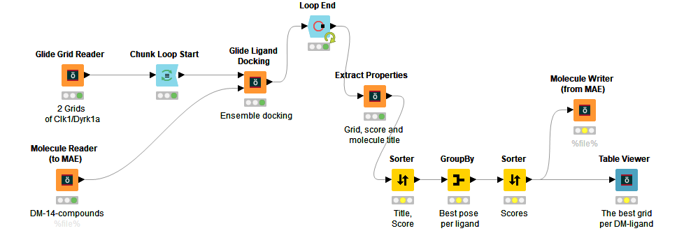
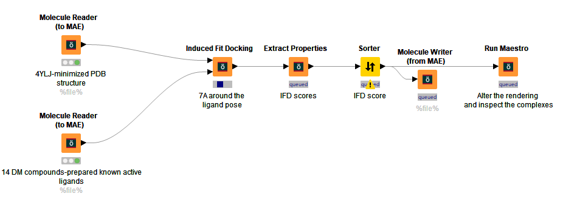
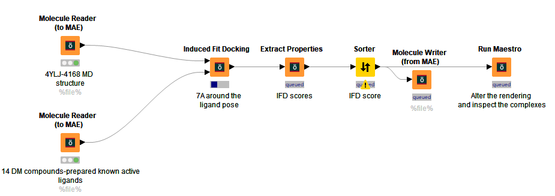
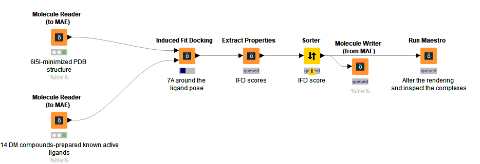
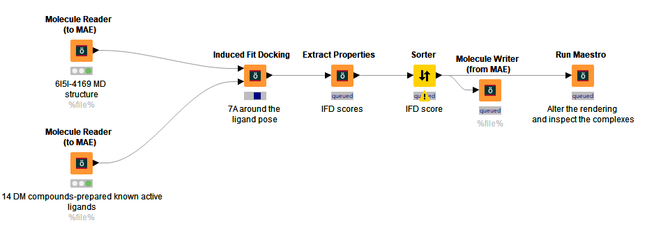
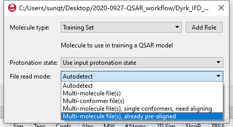

Step 1: Ensemble docking to select out the best grid per DM-ligand.
Two grids for Dyrk1a(4YLJ) and Clk1(6I5I) were generated, respectively, one derived from PDB original structural, another one produced after a 20 nanosecond molecular dynamic process.
The size of the 14 ligands varies a lot, to minimize the issue that a small ligand was docked to a big grid, we need to decide which grid make more sense by an ensemble docking workflow as shown below.
After this workflow, a different DM ligand was decided to run a subsequently induced-fit docking based on a different Grid. The table below gives the result for the best grid-based on the glide score. For example, for the DM02 compound, the original CLK grid named “glide-grid_1_6I5I_minimized” gives better binding affinity compared to its MD counterpart, while DM40 prefers the MD version of Grid named “glide-grid_1_6I5I_4169”.
This kind of extra work before induced-fit docking gives us a chance to adjust the backbone of the amino acid around the binding pocket a bit since this is completely ignored in IFD, with only side-chain flexibility accounted for.
Image of CLK1 ensemble docking resultEnsemble docking for CLK1
Image of DYRK1a ensemble docking resultEnsemble docking for Dyrk1a
Step 2: Induced fit docking to select out the best pose per DM-ligand.
 Dyrk1a docking to DM-compounds, using two different grids, only the best pose from the best grid was chosen to use in later ligand align.
 Clk1 induced-fit docking, using two grids, only the best pose from the best grid was chosen to use in later ligand alignment.
Image of CLK1 best IFD poses orientation(DM30 is missing),CLK1 best IFD poses orientation(DM30 is missing),
Image of Dyrk1a best IFD poses orientationDyrk1a best IFD poses orientation,
Step 3: Best binding poses overlayed in Cresset Forge
It is vitally important, here the “Multi-molecule files, already pre-aligned” was applied, since we already get the best pose from induced-fit docking for each ligand.
The forge projects were saved on the desktop with PIC50 values, need to double-check the accuracy of these pIC50 values.
Knime version 3.6.1 was used to run the workflow, it is an integrated part of the Schrodinger-2018-4 windows package.